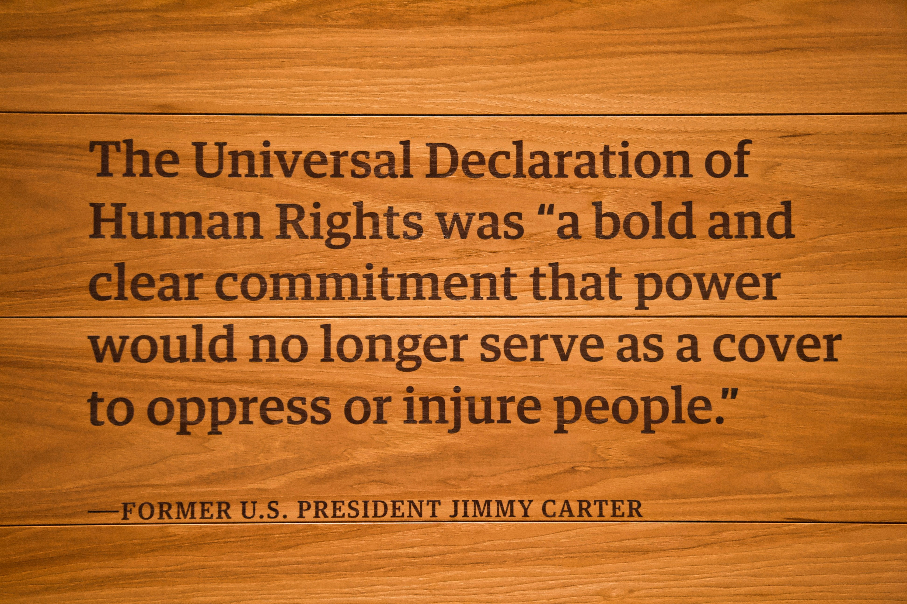

Struggle-We-Share
Kurdish Voices Silenced
Exposing the brutal oppression of Kurdish identity by the Iranian regime through language, arrests, and executions.
Kurdish Voices Silenced: A Call
I expose the Iranian regime's oppression of Kurdish people, highlighting banned language, arrests, and executions. Their identity is criminalised, yet resilience and resistance endure among the Kurdish community.
My Mission
I stand against the silencing of Kurdish voices, advocating for justice and remembrance. The struggle continues, and the spirit of the Kurdish people remains unbroken despite the regime's brutality.
My Vision
Our culture, language, and identity will endure and be remembered. We continue to resist fear and oppression with resilience and solidarity.


Silenced Voices
For decades, the Iranian regime has treated Kurdish identity like a threat. Speaking Kurdish in schools is banned. Our culture is erased, our voices ignored. Writers, poets, and teachers are arrested simply for using their language. This isn’t just censorship, it’s an attempt to destroy who we are. But even in silence, we remember. Even in fear, we speak.
Human Rights
Kurds in Iran have faced systematic human rights violations for decades. Peaceful activists are arrested without trial. Some are tortured. Others simply vanish, taken in the night and never seen again. Many have been executed for nothing more than demanding dignity. These are not isolated cases. This is a pattern. A policy. A silence enforced through fear. And it continues today. Documenting these abuses is not just about justice, it’s about refusing to let these stories disappear.

Cultural Erasure
In Iran, simply being Kurdish can make you a target. The government has spent decades trying to erase Kurdish identity, banning our language in schools, silencing our writers, destroying cultural events, and censoring even our songs. Wearing traditional clothes, speaking Sorani, or carrying a Kurdish flag can be seen as a threat. Our culture is not allowed to grow; it is punished. But despite every attempt to erase us, we continue to speak, remember, and resist.
Resilience
Despite decades of persecution, the Kurdish people have never stopped resisting. Our songs are still sung. Our language is still spoken. Our history is still told, even in whispers. In the face of arrests, executions, and exile, Kurds continue to hold on to who we are. We honour those we’ve lost, stand for those who can’t speak, and protect the culture others tried to erase. Our resilience is not just survival — it is strength.